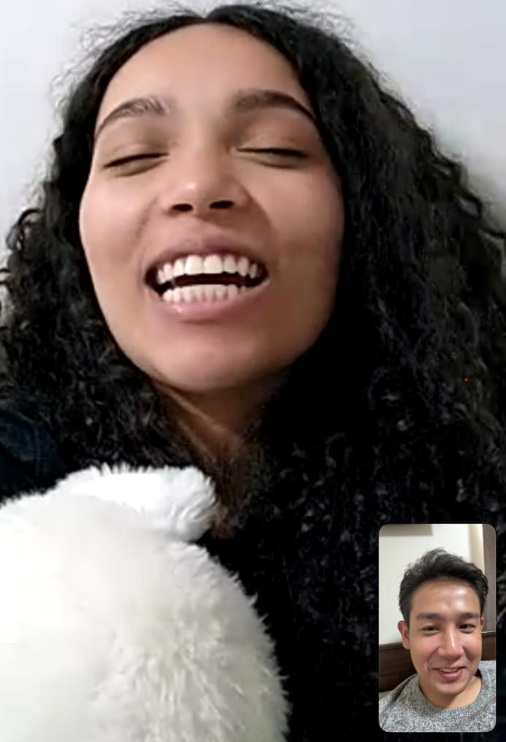
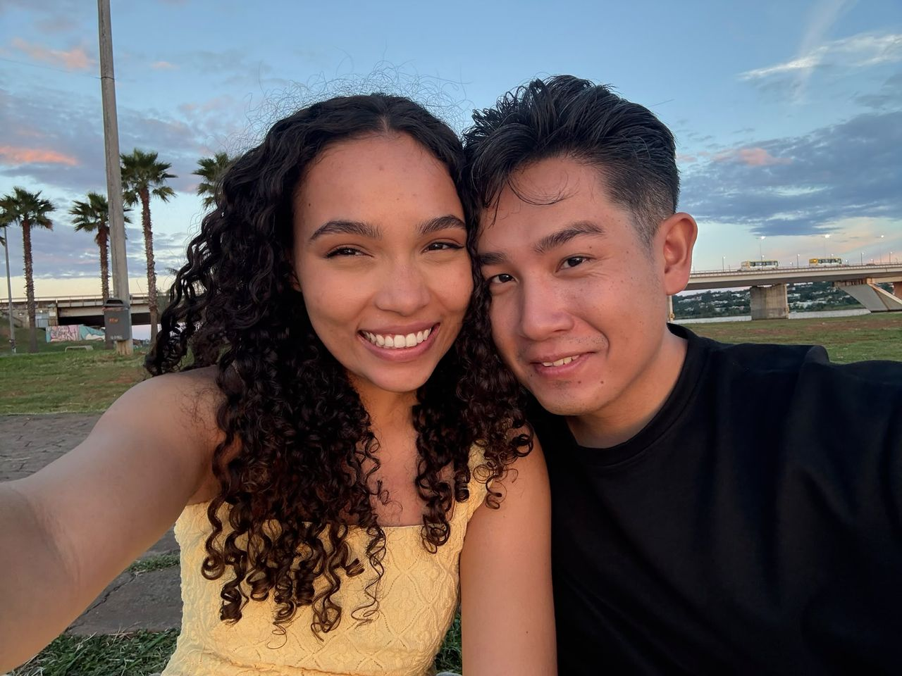
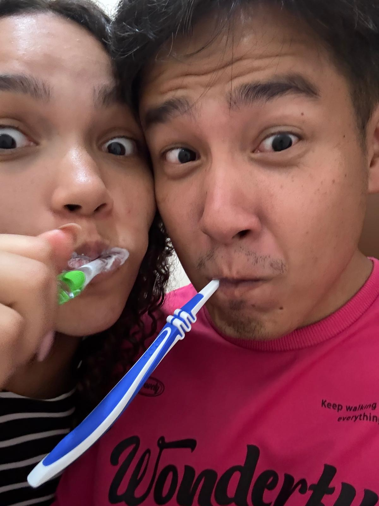
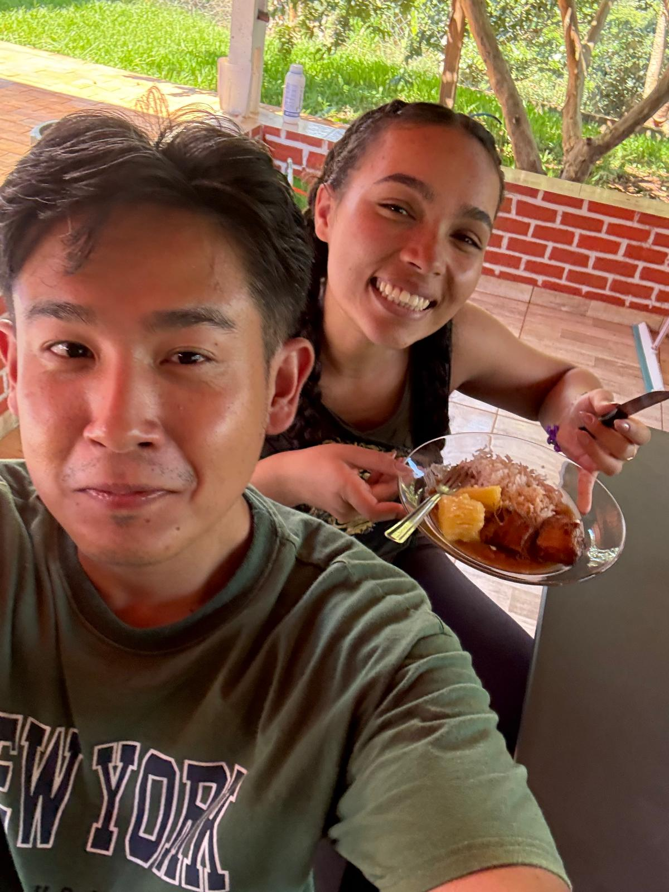
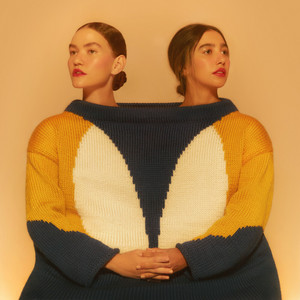
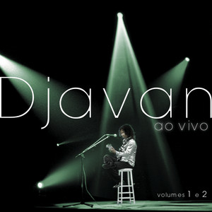
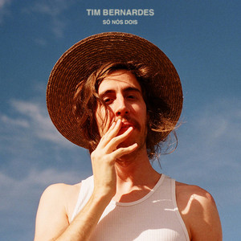

21 anos hoje. E eu, com sorte de te amar em todos os que ainda vêm.
Era o aniversário da minha mãe, os 80 do meu avô. Minha tia te apresentou e você ficou sem graça — só depois eu soube que era o zíper do vestido. Eu, achei que você não queria papo. Mas, como sou teimoso, depois de um tempo tentei puxar papo de novo.
Aí a gente cantou juntos eram cem ovelhas e eu me apaixonei pela sua voz. A gente sentou num sofá onde a mágica aconteceu e conversou por horas. Você me falou do sonho de ser médica.
No dia seguinte, você saiu no meio da aula do cursinho só pra me ver de novo — sua mãe disse que era a última chance de nos conhecermos. Ainda bem que você veio.
Eu voltei pro Japão. O amor virou madrugada, chamada de vídeo e saudade que aperta cada noite.

A gente olha pro mesmo céu. E eu te mando amor em cada estrela.
O plano era o Pontão. Fechou na véspera de Natal. Ainda descobri que tinha comprado a aliança no tamanho errado — e, no dia, esqueci de levá-la pro pedido. E eu fiquei desesperado achando que ia dar tudo errado... Então seu irmão me ajudou com o letreiro e as pétalas, e em cima da manta estendida,
Peguei o violão, cantei a nossa música e li uma carta pra você. A gente viu o sol se pôr. E você disse sim.
a gente se escolhe todo dia e eu te escolheria mais milhões de vidas.

porque uma só é pouco com você, amor, e eu quero tudo que eu puder viver.
A gente passou o Réveillon junto e dormiu na roça. Ali eu conheci a mineira de verdade — a sua família, os seus primos, o seu mundo inteiro. Foi ali que eu te vi por completo.


os melhores dias foram os mais simples: você, a sua gente, e a gente.
Ela começa numa festa e termina em "bom dia, flor do dia" — que virou nosso.
Você e o seu MPB. Eu aprendi a te ouvir nelas.
toque em cada música pra ouvir



Você é aquela melodia que meu coração reconhece, pede de novo e nunca se cansa de ouvir.
um pra cada ano seu — toque em cada carta.
Quando você chegar, eu quero te abraçar, te beijar, e dizer que a saudade valeu cada segundo.
Você é brilhante, dedicada e cheia de sonhos lindos. Mas, além de tudo isso, você é a paixão mais bonita que meu coração já teve a sorte de encontrar.
Meu amor, minha flor do dia,
No dia 21 de setembro você chegou numa festa que nem era pra eu estar — e virou o meu lugar favorito no mundo. A gente sentou num sofá e conversou por horas: você me falou do sonho de ser médica, a gente cantou junto, e eu me apaixonei pela sua voz e pelo seu jeito.
No dia 24 de dezembro, num gramado (porque o Pontão fechou, lembra?), eu peguei o violão, cantei a música que fiz pra você e te pedi em namoro vendo o sol se pôr. Desde então o mundo inteiro tentou ficar entre a gente — e não conseguiu.
Você é a pessoa mais inteligente e dedicada que eu conheço. Não tem ninguém do seu nível. A médica que você está se tornando me enche de orgulho — e você é a minha paixão.
Hoje você faz 21. Eu queria estar aí pra te abraçar; então fiz o mundo caber nessa tela. E no dia 2 de setembro, às 23:55, eu vou poder te abraçar de verdade.
Feliz 21 anos, minha flor do dia. Obrigado por ter voltado pra aquela conversa — e por ter dito sim.